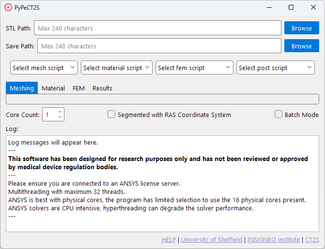
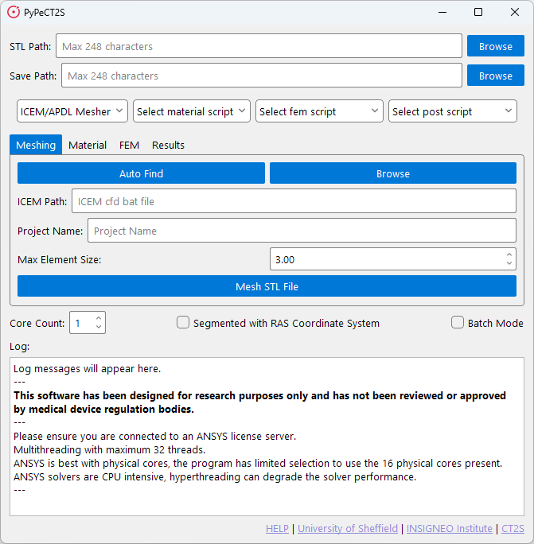
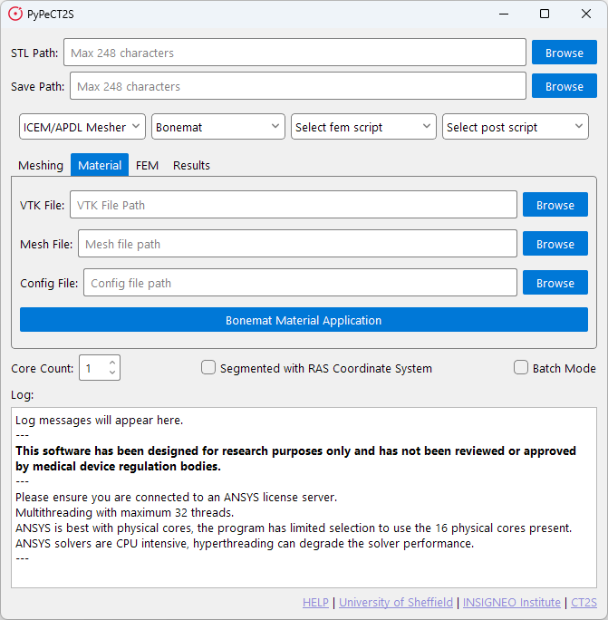
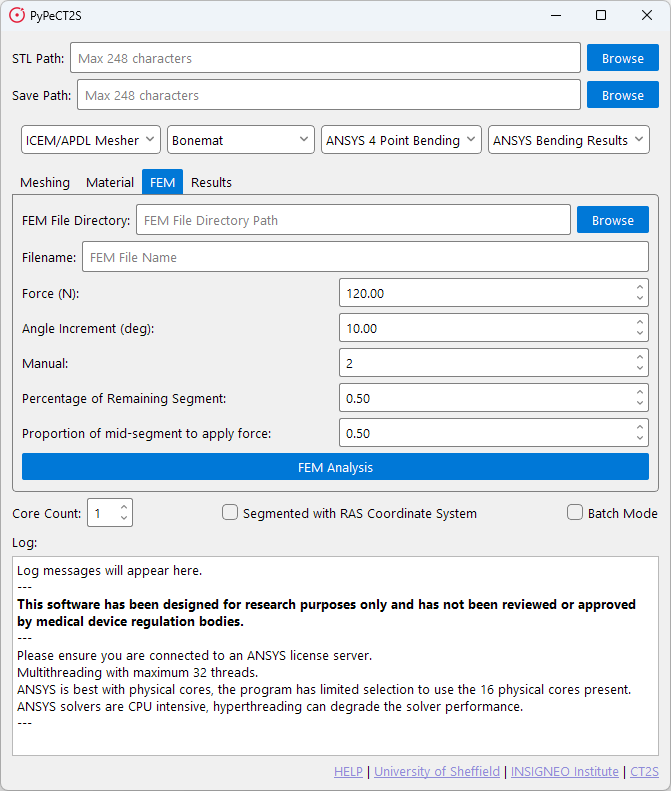
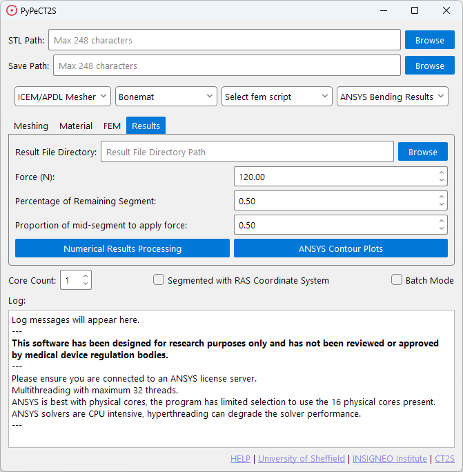

Usage
File / Model / Input Requirements
You can start the process at any step by jumping to that tab.
If you wish to start fresh you require the following files:
-
DICOM image scans contained in a
*.VTKfile.- Bonemat presents some limitations on the size of VTK files it can process. Please be aware of this.
-
Segmented 3D
*.STLmodel of the bone.- It is important you check the quality of segmentation, meshing will fail if there are external floating elements in the model.
- The program will provide information about warnings or errors in the model. However, this is not exhaustive and you should check the model yourself.
-
Configuration file for material application, based on the specific CT scanner used.
- This is a
*.conffile. - If you do not have a configuration file, you can create one using Bonemat.
- This is a
Running the Software
The software can be launched by running the PyPeCT2S.exe file from release or by running the PyPeCT2S.py file
from source.
Once you have launched the software you can run as many scripts as you like and stop at any point as output files are saved at each step (e.g. you can run meshing and material application and stop before running the FEM script).
Main Window
When the software is run, you will be presented with the main window which will look as follows.

This window present two paths, four drop-down menus, four tabs, a core count selection, two check boxes, a log window, and a list of links.
Required Fields
There are two fields that should be filled in for all included scripts:
- STL Path: The path to the STL file.
- Save Path: The path to save the output files.
These fields are used to process information required for certain functions to run such as rotation of the model, landmark determination, and key sizing of the entered bone.
Drop-down Menus and Tabs
The four drop-down menus are used to select the script you wish to run. The four tabs are used to navigate those scripts. The scripts in these dropdowns are populated from the corresponding libs directories in the program files and are determined on launch.
The tabs and the default included scripts are discussed in detail in the following sections.
- Meshing Tab section for more information on the Meshing tab.
- Material Tab section for more information on the Material tab.
- FEM Tab section for more information on the FEM tab.
- Results Tab section for more information on the Results tab.
Core Count
The core count selection is used to determine the number of cores to use when running the scripts.
Important to note:
- This does not determine the number of cores used by the software itself.
- It is strongly recommended to have at least 4 cores available for the software to run correctly.
- It is possible you will experience errors if you do not have enough cores.
- Do not assign all the cores on your machine to the scripts, as this will likely cause the software to crash.
Checkboxes
There are two checkboxes:
Segmented with RAS Coordinate System: This is used to indicate to the software that the model has been segmented with the RAS coordinate system. And that it should rotate the model to the LPS coordinate system, so it can have material properties applied in Bonemat. If you need this on, keep it checked for all steps you run.- 3D Slicer exports models in the LPS coordinate system.
- ITK Snap exports models in the RAS coordinate system.
Batch Mode: This is used to indicate to the software that you wish to run the scripts in batch mode. This feature is not currently in the distributed version of the software. Please see the contact section if you require this feature.
Log Window
The log window is used to display information about the scripts as they run. This can be used to check for errors or warnings that may have occurred during the script run.
Links
The links are used to provide information about the software and the authors.
If you require help the HELP link will take you to the documentation.
Meshing Tab
When selecting the default meshing script, you will be presented with the following window.

The meshing tab is used to run the meshing script. This script will take the *.STL file and create a mesh for running
FEM simulations. The meshing script will output a *.cdb file which can be used in ANSYS. It is recommended to only
use one core for this script as using multiple cores takes longer without much benefit.
Once you are ready to mesh you can press the Mesh STL File button. This will start the meshing process and output the
*.cdb file to the save path you have selected.
Before the meshing starts the software will check the STL file for any errors. If anything is found it will present a list of errors and warnings to you. If the meshing fails you should check these to see what may have caused the issue.
ICEM Path
Due to limitations with ICEM CFD, the meshing script requires a path to the ICEM CFD executable. To make this easier
for the user the software will attempt to find the executable for you by checking standard paths when the Auto Find
button is clicked. If it cannot find the executable, you will be told, and required to enter the path manually. This
can be done through the Browse button.
Meshing Options
The meshing parameters for this script are Project Name and Max Element Size.
Project Name: This is the name of the file that will be output from ICEM CFD and then APDL.Max Element Size: This is the maximum element size for the mesh. This is used to determine the size of the elements.- The smaller the element size, the more elements there will be in the mesh.
- The larger the element size, the fewer elements there will be in the mesh.
- The element size should be determined based on the size of the bone and the resolution of the scan.
Material Tab
When selecting the default material script, you will be presented with the following window.

The material tab is used to run the material application script. This script utilises the command line interface for Bonemat to apply material properties to the mesh without needing to open the Bonemat GUI.
STL Path is not required for this script, as the script will use the *.cdb file output from the meshing script.
However, the Save Path is required to save the output *.cdb file.
This script will take three files to apply the material properties to the mesh.
The files required are the *.conf file, the *.cdb file, and the *.VTK file. The script will output a *.cdb file
with the material properties applied.
This file can then be used in the FEM script to run the simulation.
FEM Tab
When selecting the default FEM script, you will be presented with the following window.

The FEM tab is used to run the FEM script. This script will take the *.cdb file with material properties and run a
simulation in ANSYS APDL. The script will output as many *.db files as required with the results of the simulation.
Additionally, the script can take previously prepared files saved as *.db files and run the simulation on those.
The FEM script utilises automatic landmark determination to determine the orientation of the bone and the location of the femoral head. This is used to apply the boundary conditions to the bone. If you have landmark files you can use these instead. The program will not determine landmark points automatically if landmark files are present.
Automatic landmark determination is specific to paediatric femur models, if you do not have a paediatric femur model you should determine your landmarks yourself and make sure the files are accessible for the program. This is covered further in the Landmark Determination section.
It is recommended to use multiple cores for this script as it can take a long time to run the simulation. 4 cores is recommended if you have plenty available. 2 cores is a good reduction in time against 1 core.
Once all parameters have been set you can press the FEM Analysis button to start the simulation.
Files
The FEM script has two main inputs required:
FEM File Directory: This is the path to the folder where your*.cdbfile(s) are stored.Filename: This is the name of the file that will be used for the simulation, incase there are multiple files in the directory.
Parameters
The remaining fields are used to set the parameters that define the boundary conditions. These are:
Force: The force applied to the bone. Measured in Newtons.Angle Increment: The angle increment for the simulation. This is used to determine the number of steps in the simulation. Measured in degrees.Manual: Specific orientation. 1 - Solves only one specific orientation, 2 - Solves all orientations.Percentage of Remaining Segment: The percentage of the segment to apply force. Measured in percentage.Proption of mid-segment to apply force: The proportion of the mid-segment to apply force. Measured in percentage.
Results Tab
When selecting the default results script, you will be presented with the following window.

The results tab is used to view the results of the FEM simulation. This script has two different outputs that use different elements saved from the FEM script.
Numerical Results Processing: This script will take the*.datfiles output from the FEM script and process them to provide numerical results and graphs showing failure and maximum 1st and 3rd principal strains against defined failure limits.ANSYS Contour Plots: This script will take the*.dbfiles output from the FEM script and process them to provide contour plots of the results.
The Numerical Results Processing script will output a *.csv file with the numerical results and a *.png file with
the graphs. The ANSYS Contour Plots script will output a *.png file with the contour plots.